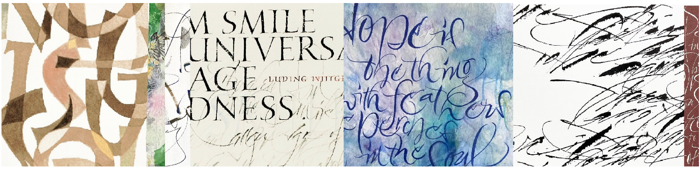

{% extends "layout.html" %}

{% block title %}
    Homepage
{% endblock %}

{% block main %}
	<!-- main image & intro text -->
	<section id="intro">
    <div class="container-lg">
      
    </div>
    <div class="container-lg">
      <div class="row justify-content-center align-items-center">
        <div class="col text-center">
          <h1>
            <div class="display-3 my-3">SHIZUKA TOYAMA</div>
            <div class="lead">Caligraphy/Letter Art</div>
          </h1>
        </div>
      </div>
      <div class="row justify-content-center align-items-center">
        <div class="col-lg-9 col-sm-11">
          <p class="lead my-4 text-dark my_message">道具を限定しない表現の多様性、視覚的表現に言葉をプラスすることによるメッセージ性。
            絵画とも日本の書道とも一味違ったレターアートとしてのカリグラフィーに魅了されて。</p>
        </div>
      </div>
    </div>
  </section>


  <section id="news">
  </section>

{% endblock %}
